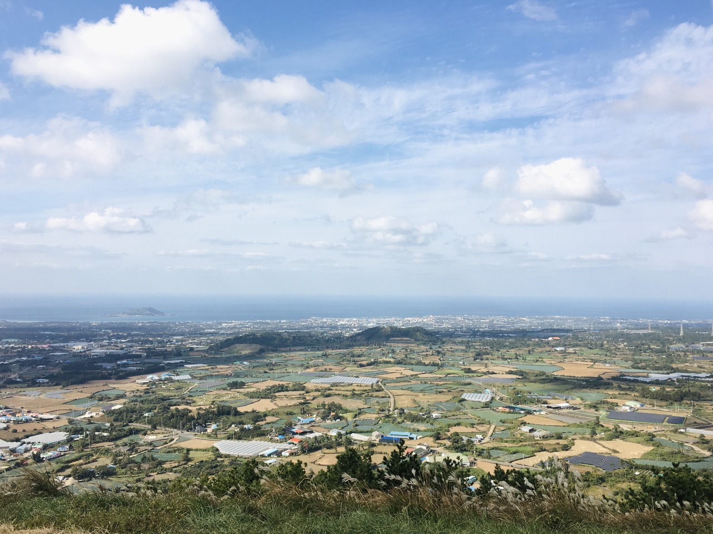

There were two places I wanted to go the most in the west.
In fact, I tried to travel only to the east, but I came to the west because of these two,I thought I only had to make a reservation a few days before I went to the Supungseok Museum, but when I went to the website, it was full until December, and I went to the official reservation site because I wanted to visit the Kim Changyeol Museum, but the site itself was not included.
I even borrowed a staff laptop here and tried it, and I called him when I woke up in the morning of the same day, but I couldn't make a reservation, so I just gave up and traveled freely with the guests.